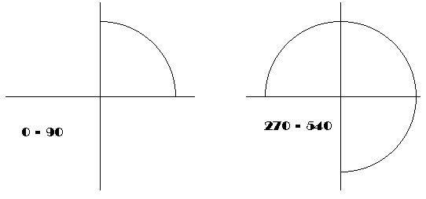
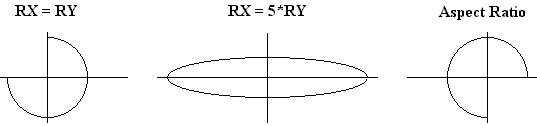

|
|
|
|
Дуги, окружности, эллипсы
Процедура Circle.
Вычерчивает окружность. Заголовок:
Procedure Circle(X,Y: Integer; R: Word);
ЗдесьX, Y- координаты центра; R - радиус в пикселях.
Окружность выводится текущим цветом. Толщина линии устанавливается текущим стилем, вид линии всегда SolidLn (сплошная). Процедура вычерчивает правильную окружность с учетом изменения линейного размера радиуса в зависимости от его направления относительно сторон графического экрана, т.е. с учетом коэффициента GetAspectRatio. В связи с этим параметр R определяет количество пикселей в горизонтальном направлении.
В следующем примере в центре экрана создается окно, постепенно заполняющееся случайными окружностями. Для выхода из программы нажмите на любую клавишу.
Uses Graph, CRT;
var
d,r,e,x,y: Integer;
begin.
{Инициируем графику}
d i= Detect; InitGraph(d, r, '');
e := GraphResult; if e <> grOK then
WriteLn(GraphErrorMsg(e))
else
begin
{Создаем окно в центре экрана}
х := GetMaxX div 4;
у := GetMaxY div 4;
Rectangle(х,у,3*х,3*у);
SetViewPort(x+1,y+1,3*x-1,3*y-1,ClipOn);
{Цикл вывода случайных окружностей}
repeat
SetColor(succ(Random(white))); {Случайный цвет}
SetLineStyle(0,0,2*Random(2)+1); {и стиль линии}
х := Random(GetMaxX); {Случайное положение}
у := Random(GetMaxY); {центра окружности}
Circle(х,у,Random(GetMaxY div 4));
until KeyPressed;
if ReadKey=#0 then x := ord(ReadKey);
CloseGraph
end
end.
Процедура Arc.
Чертит дугу окружности. Заголовок:
Procedure Arc(X,Y: Integer; BegA,EndA,R: Word);
Здесь X, Y - координаты центра; BegA, EndA - соответственно начальный и конечный углы дуги; R - радиус.
Углы отсчитываются против часовой стрелки и указываются в градусах. Нулевой угол соответствует горизонтальному направлению вектора слева направо. Если задать значения начального угла 0 и конечного - 359, то будет выведена полная окружность. При вычерчивании дуги окружности используются те же соглашения относительно линий и радиуса, что и в процедуре Circle.
Вот как выглядят две дуги: одна с углами 0 и 90, вторая 270 и 540 градусов (рис. 14.6):

Рис.14.6. Иллюстрация процедуры Arc
Следующая программа создает это изображение:
Uses Graph, CRT;
var
d, r, е : Integer;
Xasp,Yasp: Word;
begin
{Инициируем графику}
d := Detect;
InitGraphtd, r, '');
e := GraphResult; if e <> grOK then
WriteLn(GraphErrorMsg(e))
else
begin
GetAspectRatio(Xasp,Yasp);
{R = 1/5 от вертикального размера экрана}
r := round(Yasp*GetMaxY/5/XAsp);
d := GetMaxX div 2; {Смещение второго графика}
e : = GetMaxY div 2; {Положение горизонтальной оси}
{Строим левый график}
Line (0,e,5*r div 2,e); {Горизонтальная ось}
Line (5*r div 4,e div 2,5*r div 4,3*e div 2) ;
Arc (5*r div 4,e,0,90,R); {Дуга}
OutTextXY(0,e+e div 8,'0 - 90'); {Надпись}
{Правый график}
Line (d,e,d+5*r div 2,e);
Line (d+5*r div 4,e div 2, d+5*r div 4,3*e div 2);
Arc (d+5*r div 4,e,270,540,R);
OutTextXY(d,e+e div 8,'270 - 540');
{Ждем нажатия на любую клавишу}
if ReadKey=#0 then d := ord(ReadKey);
CloseGraph
end
end.
Процедура GetArcCoords.
Возвращает координаты трех точек: центра, начала и конца дуги. Заголовок:
Procedure GetArcCoords(var Coords: ArcCoordsType);
Здесь Coords - переменная типа ArcCoordsType, в которой процедура возвращает координаты центра, начала и конца дуги.
Тип ArcCoordsType определен в модуле Graph следующим образом:
type
ArcCoordsType = record
X,Y : Integer; {Координаты центра}
Xstart,Ystart: Integer; {Начало дуги}
Xend,Yend : Integer; {Конец дуги}
end;
Совместное использование процедур Arc и GetArcCoords позволяет вычерчивать сопряжения двух прямых с помощью дуг. Обратите внимание на коррекцию длины радиуса в следующем примере, в котором вычерчивается прямоугольник со скругленными углами.
Uses Graph,CRT;
const
RadX = 50; {Горизонтальный радиус}
lx = 400; {Ширина}
ly = 100; {Высота}
var
d,r,e: Integer;
coo : ArcCoordsType;
x1,y1: Integer;
xa,ya: Word;
RadY : Integer; {Вертикальный радиус}
begin
{Инициируем графику}
d := Detect; InitGraph(d, r, ' ') ;
e := GraphResult; if e <> grOK then
WriteLn(GraphErrorMsg(e))
else
begin
GetAspectRatio(xa,ya) ; {Получаем отношение сторон}
{Вычисляем вертикальный радиус и положение фигуры с учетом отношения сторон экрана}
RadY := round (RadX *( xa /ya) );
x1 := (GetMaxX-lx) div 2;
y1 := (GetMaxY-2*RadY-ly) div 2;
{Вычерчиваем фигуру}
Line (x1,y1,x1+lx,y1); {Верхняя горизонтальная}
Arc (x1+lx,y1+RadY,0,90,RadX) ; {Скругление}
GetArcCoords(coo);
with coo do
begin
Line(Xstart,Ystart,Xstart,Ystart+ly);
{Правая вертикальная}
Arc(Xstart-RadX,Ystart+ly,270,0,RadX);
GetArcCoords (coo);
Line(Xstart,Ystart,Xstart-lx,Ystart);
{Нижняя горизонтальная}
Arc(Xstart-lx,Ystart-RadY,180,270,RadX);
GetArcCoords(coo);
Line(Xstart,Ystart,Xstart,Ystart-ly);
Arc(Xstart+RadX,Ystart-ly,90,180,RadX)
end ;
if ReadKey=#0 then d := ord(ReadKey);
CloseGraph
end
end.
Процедура Ellipse.
Вычерчивает эллипсную дугу. Заголовок:
Procedure Ellipse(X,Y: Integer; BegA,EndA,RX,RY: Word);
Здесь X, Y - координаты центра; BegA, EndA - соответственно начальный и конечный углы дуги; RX, RY- горизонтальный и вертикальный радиусы эллипса в пикселях.
При вычерчивании дуги эллипса используются те же соглашения относительно линий, что и в процедуре Circle, и те же соглашения относительно углов, что и в процедуре Arc. Если радиусы согласовать с учетом масштабного коэффициента GetAspectRatio, будет вычерчена правильная окружность.
В следующей программе вычерчиваются три эллипсных дуги (рис. 14.7) при разных отношениях радиусов. Замечу, что чем выше разрешение графического экрана, тем ближе к единице отношение сторон и тем меньше первый график отличается от третьего.

Рис.14.7. Эллипсные дуги
Uses Graph, CRT;
var
d,r,e: Integer;
xa,ya: Word;
begin
{Инициируем графику}
d := Detect; InitGraph(d, r, '');
e := GraphResult; if e <> grOK then
WriteLn(GraphErrorMsg(e))
else
begin
{Первый график}
OutTextXY(5 0,4 0,'RX = RY'); {Надпись}
Line (0,100,160,100); {Ось X}
Line (80,55,80,145); {Ось Y}
Ellipse (80,100,180,90,40,40);
{Второй график}
OutTextXY(260,40,'RX = 5*RY');
Line (190,100,410,100);
Line (300,55,300,145);
Ellipse (300,100,0,359,100,20);
{Третий график}
OutTextXY(465,40,'Aspect Ratio');
Line (440,100,600,100);
Line (520,55,520,145);
GetAspectRatio(xa, ya);
Ellipse (520,100,0,270,40,round(40*(xa/ya)));
if ReadKey=#0 then
d := ord(ReadKey);
CloseGraph
end
end.
|
|
|
|